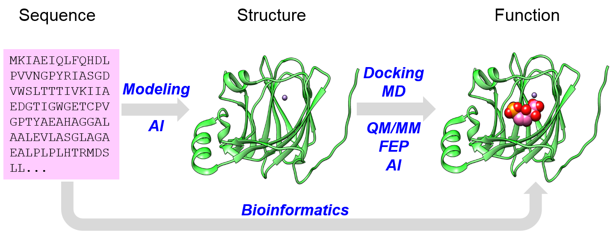
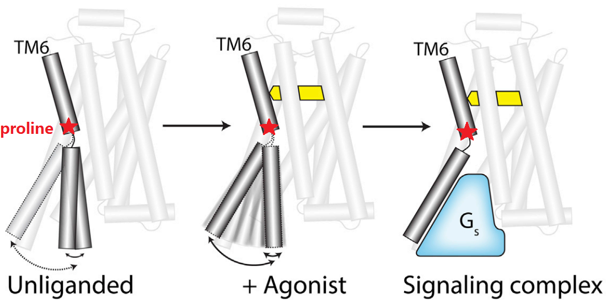
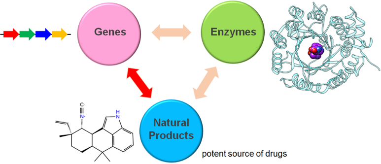

“Structure without function is a corpse, function without structure is a ghost”
My research group aim to develop and apply methods to gain understanding of protein sequence-structure-function relationship. We develop and apply methods in blue to address this problem. We work on enzymes and transmembrane receptors.
GPCR mechanism study & ligand discovery.
For transmembrane receptors such as G protein-coupled receptors (GPCRs), we focus on developing methods to understand the key questions such as (a) universal activation mechanism, (b) biased signalling mechanism and (c) G protein selectivity mechanism.
Based on our understanding of these mechanisms, we do structure- and mechanism-based ligand discovery, espeically allosteric ligands and biased ligands.
Integrative ligand docking: many GPCRs have been intensively researched and have a lot of known ligands. However, where do these ligands bind and how do they bind are not known for most of the cases. We use docking, together with mutation data, SAR data, selectivity data and potentially many other data, to find binding sites and poses of known ligands of GPCRs. Once we get the accurate binding poses, we try to understand the mechanism of these molecules.
We offer the following tools: (1) allosteric pathway mapping, (2) single point mutations that stabilize either active or inactive state of GPCRs, and (3) structure- and mechanism-based allosteric and biased ligand discovery.
Discover novel enzyme functions, novel metabolites (natural products) and novel pathways
The number of protein sequences increase explosively nowadays. However, at least 50% of sequences have their functions unknown, uncertain or incomplete. Traditional bioinformatics approaches use “annotation transfer” to assign known functions to new sequences, and hardly to discover any new functions.
We focus on developing methods to discover novel enzyme function, novel metabolites (especially natural products) and novel pathways.
Tools we have for enzyme function prediction: (1) Pathway docking (2) Sequence similarity network (SSN) (3) Genome neighborhood network (GNN) (4) Machine learning.